Một bộ ly hợp ma sát có cấu tạo ba phần cơ bản như sau:
- Nhóm các chi tiết chủ động gồm: bánh đà động cơ, đĩa ép, vỏ ly hợp, cần tách (với ly hợp lò xo ép bố trí xug quanh), lò xo ép và các lò xo lá. Khi ly hợp ở trạng thái mở hoàn toàn thì các chi tiết thuộc nhóm này sẽ quay cùng tốc độ với bánh đà.
- Nhóm các chi tiết bị động bao gồm: Đĩa ma sát, trục ly hợp. Khi ly hợp ngắt hoàn toàn các chi tiêt thuộc nhóm này sẽ đứng yên.
- Nhóm các chi tiết thuộc phần dẫn động điều khiển: Ổ bi bạc mở, đòn bẩy và bộ phận dẫn động ( bàn đạp, thanh đòn liên kết, trợ lực ly hợp,…)
* Ly hợp ma sát khô một đĩa bị động lò xo ép bố trí trung tâm
Sơ đồ cấu tạo được thể hiện trên Hình 2.1
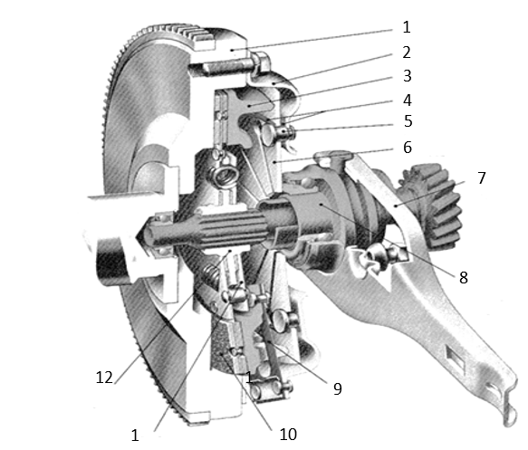
Hình 2.1. Cấu tạo ly hợp ma sát lò xo ép bố trí trung tâm
1- Bánh đà; 2- Vỏ ly hợp; 3- Đĩa ép; 4- Vòng tựa; 5- Chốt giữ khoảng cách; 6- Lò xo màng; 7- Đòn bẩy; 8- Ổ bi bạc mở; 9- Lò xo lá; 10- Bề mặt ma sát; 11- Đĩa ma sát; 12- Moay ơ đĩa ma sát.
Lò xo màng (6) được làm bằng thép lò xo, nó hoạt động như đòn bẩy hai đầu với điểm tựa là các vòng (4); vòng tựa ở mỗi phía của lò xo màng được giữ chặt bởi chốt (5) bắt chặt vào nắp ly hợp.
Dùng các lò xo lá (9) để nối lò xo màng với đĩa ép ly hợp. Một số kiểu xe gần đây đã áp dụng nắp ly hợp kiểu DST (lật ngược lò xo màng), ở loại nắp ly hợp này, người ta lật ngược các đầu của nắp ly hợp để trực tiếp giữ lò xo ở vị trí thích hợp. Các lò xo lá (9) được lắp theo chiều tiếp tuyến để truyền mônen xoắn từ vỏ ly hợp sang đĩa ép.Khi nối động lực lò xo màng (6) sẽ ép chặt đĩa ép, đĩa bị động và bánh đà liền thành một khối. Mô men xoắn từ bánh đà sang đĩa ma sát và tới hệ thống truyền lực dưới dạng mô men ma sát.
Khi cắt động lực người lái đạp vào bàn đạp ly hợp, qua phần dẫn động làm ổ bi bạc mở (8) dịch chuyển đi vào tác dụng lên đầu trong của lò xo màng, Lò xo màng lúc này đóng vai trò như một đòn bẩy với điểm tựa tại vòng tựa (4) làm cho đầu ngoài cùng với đĩa ép dịch chuyển đi ra. Đĩa ép được lách khỏi đĩa ma sát. Động lực lừ động cơ tới hệ thống truyền lực bị cắt.
Trên Hình 2.2 là ly hợp hiệu chỉnh đĩa ép tự động SAC (Self Adjusting Clutch) sẽ tự động hiệu chỉnh đĩa ép khi bố ma sát bị mòn.
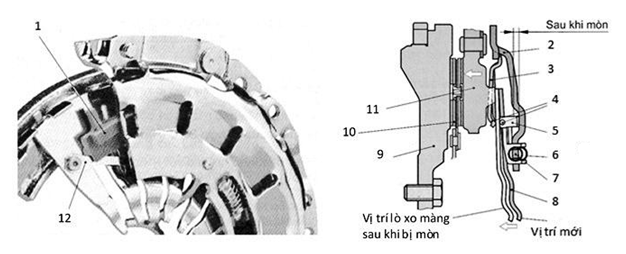
Hình 2.2. Sơ đồ cấu tạo ly hợp ma sát lò xo ép bố trí trung tâm tự động hiệu chỉnh đĩa ép (SAC)
1- Vòng hiệu chỉnh; 2- Vỏ ly hợp; 3- Lò xo đĩa cảm biến; 4- Ổ tựa lò xo màng; 5- Vòng hiệu chỉnh; 6- Lò xo nén; 7- Nêm hiệu chỉnh; 8- Lò xo màng; 9- Bánh đà; 10- Đĩa ma sát; 11- Đĩa ép; 12- Lò xo đĩa cảm biến.
Một số chi tiết bổ sung thêm là lò xo đĩa cảm biến (3), vòng hiệu chỉnh (1). Lò xo màng không được tán rivê chặt vào thân ly hợp, mà phải được để tựa quay được trên lò xo đĩa cảm biến và vòng hiệu chỉnh. Khi bề mặt ma sát mòn, đĩa ép dịch về phía bánh đà. Nếu lực giữ tại điểm tựa của lò xo đĩa cảm biến bị vượt quá khi ngắt ly hợp, thì lò xo màng di chuyển về phía bánh đà cho tới khi lực ngắt ly hợp và lực lò xo đĩa cảm biến bằng nhau. Do vậy, nó còn được gọi là ly hợp hiệu chỉnh theo tải trọng (LAC = Load Adjusted Clutch). Khe hở tạo thành sẽ được cân bằng bời vòng hiệu chỉnh.
Đặc điểm của loại ly hợp này:
- Lực ngắt nhỏ hơn so với ly hợp lò xo màng thông thường;
- Lực ép không đổi trong suốt quá trình hao mòn của bố ma sát;
- Tuổi thọ dài hơn do phạm vi mòn lớn
* Ly hợp ma sát khô một đĩa bị động lò xo ép bố trí xung quanh
Ly hợp ma sát khô thường đóng, lò xo ép bố trí xung quanh được thể hiện trên Hình 2.3.Việc truyền mô men xoắn được thực hiện nhờ các bề mặt ma sát giữa phần chủ động và bị động. Loại này khác so với ly hợp lò xo màng ở lực ép sinh ra bởi nhiều lò xo ép bố trí xung quanh và có thêm chi tiết cần tách để đóng- mở ly hợp. Dần động điều khiển đóng, mở ly hợp được thực hiện bởi dẫn động điều khiển bằng thủy lực hoặc có trợ lực
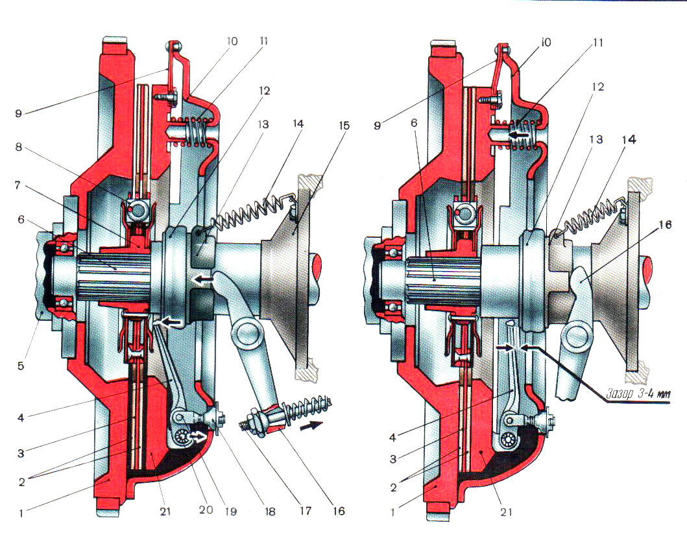
Hình 2.3. Cấu tạo ly hợp ma sát lò xo ép bố trí xung quanh
1- Bánh đà; 2- Bề mặt ma sát; 3- Đĩa ma sát; 4- Cần tách; 5- Trục khuỷu; 6- Trục ly hợp; 7- Moaay ơ đĩa ma sát; 8- Lò xo giảm chấn; 9- Lò xo lá; 10- Vỏ ly hợp; 11- Lò xo ép; 12- Ổ bi bạc mở; 13- Bạc dẫn hướng; 14- Lò xo hồi vị; 15- Nắp; 16- Đòn bẩy.
Nhìn chung, những ly hợp ma sát khô, thường đóng loại một đĩa có kết cấu đơn giản, ít khi xảy ra hiện tượng dính ly hợp (không ngắt hoàn toàn giữa phần chủ động và bị động của ly hợp), kích thước chiều trục nhỏ so với loại hai đĩa. Tuy nhiên, để có thể truyền được momen lớn thì yêu cầu kích thước hướng kính phải lớn.
a. Cấu tạo một số chi tiết của ly hợp
Bánh đà
Bánh đà của động cơ Hình 2.4 vừa là chi tiết của động cơ vừa là chi tiết của bộ phận chủ động. Bánh đà bắt chặt với trục khuỷu nhờ các bulông định tâm, trên bề mặt được gia công nhẵn làm bề mặt tựa của ly hợp. Mép ngoài của mặt bánh đà có các lỗ ren để bắt với vỏ ly hợp đồng thời có các chốt định tâm bảo đảm đồng tâm giữa bánh đà và vỏ, bảo đảm khả năng truyền tốt moment.
Bánh đà làm bằng gang có khả năng dẫn nhiệt cao, phần lõm phía trong có các lỗ thoát dầu, mỡ, bụi, các lỗ được khoan xiên tạo điều kiện cho dầu mỡ thoát ra ngoài theo lực ly tâm.
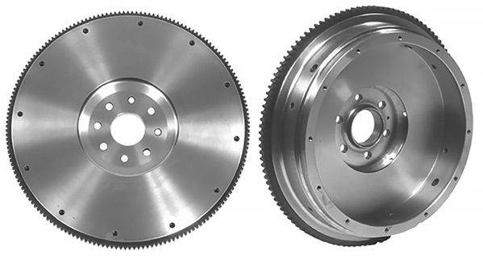
Hình 2.4. Bánh đà
Trên Hình 2.5 thể hiện đặc điểm cấu tạo của loại bánh đà kép. Bánh đà kép chủ yếu được thiết kế để giảm tiếng ồn và sự dao động, rung lắc trong quá trình hoạt động. Bánh đà kép là một loại vật liệu “xốp/đàn hồi” cơ học, trong đó sự rung lắc và độ xóc trong đường truyền lực được loại bỏ bởi 2 khối bánh đà chính (1) và phụ (6) được kết nối với nhau bằng một loạt lò xo (2) có độ cứng/hệ số biến dạng cao. Bất kỳ sự nhấp nhô nào đều được hấp thụ (ít nhất là một phần) bởi các lò xo giữa các khối bánh đà. Vì vậy, có thể coi rằng công dụng của bánh đà kép như một bộ giảm chấn: mỗi bánh đà là một liên kết chắc chắn, nhưng giữa chúng có một lò xo “mềm” làm hạn chế sự rung lắc trong quá trình tăng tốc, chuyển số,… Xét về hoạt động của bánh đà “khi nguồn năng lượng có sẵn ở tốc độ thay đổi nhưng được yêu cầu ở tốc độ đồng đều. Ví dụ: các máy móc điều khiển bằng động cơ đốt trong kiểu pittông, chúng ta hình dung đến chức năng của bộ đồng tốc (governor).
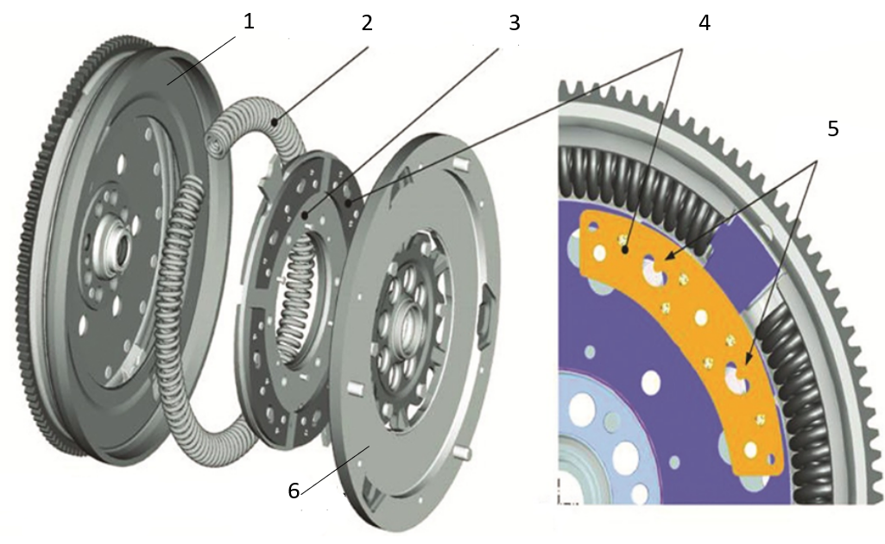
Hình 2.5. Bánh đà kép
1- Bánh đà chính; 2- Lò xo vòng; 3- Mặt bích; 4- Khối lượng con lắc; 5- Con lăn; 6- Bánh đà phụ.
Đĩa ma sát (đĩa bị động)
Đĩa ma sát Hình 2.6 có chức năng truyền momen xoắn động cơ từ bánh đà sang trục sơ cấp hộp số; giúp cho việc khởi chạy êm dịu, không rung giật; làm giảm các giao động xoắn.
Đĩa ma sát bao gồm: Moayơ, các tấm ma sát, các lò xo giảm chấn, lò xo đệm và xương đĩa. Các bề mặt ma sát gắn với lò xương đĩa, khi ly hợp ăn khớp chính nhờ các xương đĩa này mà sự rung động được giảm thấp. Trên cả hai mặt của đĩa ma sát có các rãnh nhằm ngăn không cho đĩa bị dính với bánh đà hoặc đĩa ép khi ly hợp nhả. Các rãnh còn giúp cho việc làm nguội các mặt tiếp xúc và loại bỏ các bột mài màn ra ngoài.
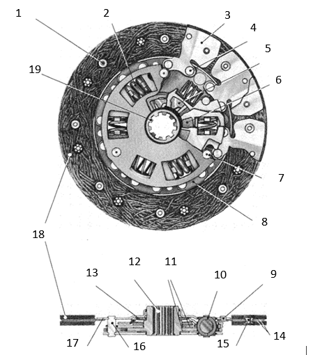
Hình 2.6. Đĩa ma sát
1- Đinh tán; 2,10- Lò xo giảm chấn; 3- Xương đĩa; 4,9- Đinh tán xương đĩa; 5,13- Lò xo đệm; 6,11- Vòng đàn hồi; 7- Chốt chặn; 8,17- Đĩa dẫn động; 12,19- Moay ơ; 18- Bề mặt ma sát.
Bề mặt đĩa ma sát được làm bằng sợi hữu cơ tổng hợp, thí dụ như sợi aramid, sợi thủy tinh hoặc sợi các bon. Để tăng thêm độ cứng của bề mặt ma sát những sợi đồng được đan hoặc ép thêm vào. Do amiăng là loại vật liệu tác động xấu đến sức khoẻ con người nên dần thay thế bằng vật liệu khác. Hiện nay một số đĩa ma sát dùng bề mặt ma sát bằng vật liệu kim loại hoặc gốm.
Bộ phận làm giảm dao động xoắn bao gồm các lò xo giảm chấn (2) và thiết bị ma sát có nhiệm vụ làm giảm sự rung động của động cơ, loại bỏ tiếng ồn của hộp số như tiếng lách cách của hộp số và sự mòn bánh răng nhờ đó công suất truyền đến hộp số được êm dịu hơn. Moayơ (12) thiết kế để có thề xoay được so với đĩa dẫn động. Moayơ tựa vào đĩa dẫn động thông qua những lò xo giảm chấn tỳ trên mặt bích của moayơ. Khi chịu tải, moayơ có thề xoay có giới hạn so với phần xương đĩa (3) mang bề mặt ma sát. Momen được truyền bởi các lò xo giảm chấn phải lớn hơn momen cực đại cùa động cơ để ngăn mặt bích moayơ va đập vào các chốt chặn (7).
Thiết bị ma sát được bố trí trong moayơ, bao gồm các vòng đàn hồi (6) và lò xo đệm (5). Khi hiện tượng xoắn xảy ra, thiết bị ma sát làm giảm các dao động xoắn nhờ ma sát. Lực ép dọc trục cần thiết để tạo ma sát được tạo ra bởi lò xo đệm. Bộ phận đàn hồi cho bề ma sát là các phân khúc đàn hồi được bố trí giữa hai bề mặt ma sát. Chúng được làm từ tấm thép lò xo gợn sóng để hình thành lên xương đĩa (3), giúp các bề ma sát kết nối êm dịu khi đóng ly hợp và không rung giật khi khởi chạy. Đĩa ma sát có hành trình dịch chuyển khoảng 1,5mm khi ly hợp thay đổi từ trạng thái ăn khớp đến không ăn khớp.
Đĩa ép và lò xo ép
Đĩa ép ly hợp được làm bằng vật liệu chịu tải, đảm bảo độ phẳng cao, được điều khiển để đóng hoặc mở ly hợp. Đĩa ép, với một hoặc nhiều lò xo gắn với vỏ ly hợp. Vỏ ly hợp được gắn với bánh đà bằng các bulông và cùng quay với nó. Khi ly hợp ở trạng thái đóng, lực ép sinh ra từ lò xo đẩy đĩa ép tiếp xúc với đĩa ma sát và bánh đà.
Đĩa ép gồm hai loại: Loại sử dụng lò xo trụ và lò xo màng.
- Loại sử dụng lò xo trụ: Được thể hiện trên Hình 2.7 Loại này sử dụng những lò xo trụ nhỏ giống như lò xo xupáp. Bề mặt đĩa ép (3) là một vòng tròn lớn mà đĩa ma sát tiếp xúc vào, thường được chế tạo bằng gang hoặc thép. Bề mặt của đĩa ép có các vấu để định vị các lò xo; ngoài ra còn có kết cấu để liên kết với cần tách được gắn với vỏ ly hợp. Trong suốt quá trình hoạt động của ly hợp, đĩa ép di chuyển về phía trước và bên trong vỏ ly hợp.
Cần tách được lắp bên trong đĩa ép, nó được nâng lên và dịch chuyển bề mặt đĩa ép ra xa so với bánh đà. Các lò xo hình trụ nằm xung quanh đĩa ép và xen giữa những cần tách để giữ chúng từ vị trí tự do về vị trí làm việc.
Lực giữ trong cụm đĩa ép được tạo ra bởi một số lò xo xoắn hình trụ, các lò xo được bố trí vòng tròn trên đĩa ép nằm giữa đĩa ép và vỏ ly hợp. Khi nhấn bàn đạp ly hợp, đẩy ổ bi bạc mở vào cần tách, đĩa ép tách khỏi đĩa ma sát và nén các lò xo ép tỳ vào vỏ ly hợp, ly hợp khi đó ở trạng thái ngắt.
Nhả bàn đạp ly hợp thì lò xo xoắn giãn ra đẩy đĩa ép vào tiếp xúc với bánh đà. Ly hợp ở trạng thái đóng. Lò xo phải đủ cứng để giữ cho ly hợp không bị trượt. Tuy nhiên nếu lò xo quá cứng thì sẽ ảnh hưởng tới tuổi thọ làm việc của bộ ly hợp
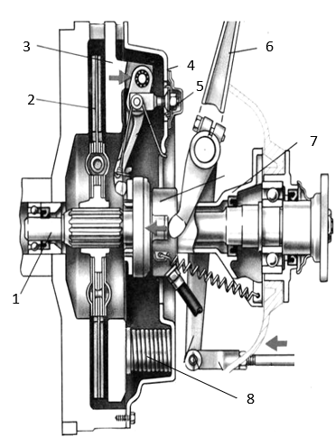
Hình 2.7. Sơ đồ cấu tạo của đĩa ép kiểu ly hợp lò xo hình trụ
1- Trục bị động; 2- Đĩa ma sát; 3- Đĩa ép; 4- Vỏ ly hợp; 5- Đai ốc hiệu chỉnh; 6- Đòn bẩy; 7- Ống lót; 8- Lò xo ép.
- Với loại sử dụng lò xo màng: Được thể hiện trên Hình 2.8. Thường sử dụng những lò xo lá đơn. Chức năng giống như chức năng của kiểu lò xo trụ. Lò xo lá là một lò xoắn vòng tròn lớn, được uốn cong lên hoặc lõm xuống và được chia thành những viên phân theo hướng kính của lò xo. Đầu phía ngoài lò xo màng được gắn vào đĩa ép bằng chốt, một vòng tựa được gắn phía sau lò xo màng có nhiệm vụ định vị cạnh ngoài của lò xo.
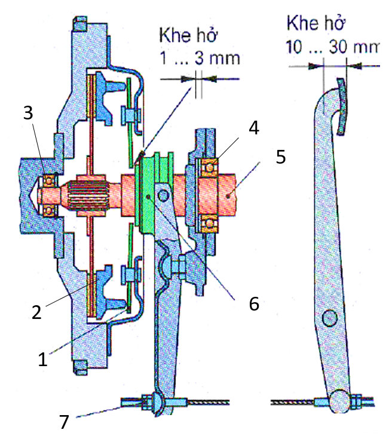
Hình 2.8. Sơ đồ cấu tạo của đĩa ép kiểu ly hợp lò xo màng
1- Lò xo màng; 2- Đĩa ép; 3- Ổ bi đỡ phía trong; 4- Ổ bi đỡ phía ngoài; 5- Trục bị động; 6- Ổ bi bạc mở; 7- Đai ốc điều chỉnh.
Lò xo ép kiểu màng hoạt động khi ổ bi bạc mở tác dụng đẩy đầu trong của nó thì đầu phía ngoài di chuyển ngược lại. Điều này sẽ tách đĩa ma sát khỏi đĩa ép và bánh đà. Khi không có tác dụng lên bàn đạp thì lò xo màng tạo lực ép đẩy đĩa ma sát vào tiếp xúc với bánh đà.
Ổ bi bạc mở (Khớp ngắt ly hợp)
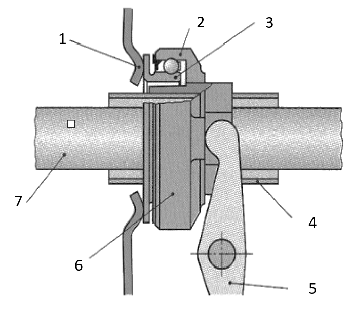
Hình 2.9. Khớp ngắt ly hợp
1- Đầu trong của lò xo màng; 2- Vòng ngoài ổ bi; 3- Vòng trong ổ bi; 4- Ống dẫn hướng; 5- Đòn bẩy; 6- Ổ bi bạc mở; 7- Trục bị động ly hợp (Trục sơ cấp hộp số).
Cơ cấu đóng-ngắt ly hợp Error! Reference source not found. có nhiệm vụ điều khiển lò xo màng hoặc cần tách. Cơ cấu đóng-ngắt ly hợp dạng cơ khí được dẫn hướng trung tâm. Nó được dẫn trên ống dẫn hướng được gắn trên trục hộp số và đồng tâm với trục sơ cấp của hộp sổ. Ổ bi của cơ cấu là ổ bi cầu bịt kín với vòng ngoài (2) cố định và vòng trong (3) xoay được. Khi ở trạng thái ngắt ly hợp thì vòng trong tỳ trực tiếp không có khe hở vào đầu trong của lò xo màng hoặc đầu các cần tách.
Khớp ngắt ly hợp có tác dụng làm giảm ma sát giữa cần đẩy và càng mở ly hợp, tránh được sự mài mòn. Khớp ngắt ly hợp là một bộ phận kín trong đó chứa mỡ bôi trơn, nó trượt trên trục hoặc trong ống bao lồng bên ngoài trục từ phía trước của hộp số.
Ở một vài loại xe đặc biệt có sử dụng khớp ngắt ly hợp bằng than chì. Nó là một khối tròn bằng than chì chống ma sát ép lên trên đĩa phẳng và đẩy cần đẩy ly hợp. Khớp ngắt ly hợp thường được tách rời với đòn bẩy (5). Một vòng hãm nhỏ để giữ khớp ngắt trên càng mở, khi đó sự chuyển động ở hướng khác sẽ đẩy khớp ngắt chạy dài trên trục hộp số, lúc này khớp ngắt sẽ không còn hoạt động trong suốt quá trình động cơ truyền công suất. Nó sẽ giảm bớt sự mài mòn và hư hỏng của khớp ngắt ly hợp.
Trục bị động
Ly hợp và hộp số là hai cụm được bố trí liền nhau, vì vậy trục bị động của ly hợp đồng thời là trục chủ động của hộp số Error! Reference source not found.. Trục bị động (5) được đặt đồng tâm với trục khuỷu của động cơ nhờ hai ổ bi: Một ổ bi phía trong (3) đặt tại lỗ tâm trục khuỷu (hốc bánh đà) và ổ bi phía ngoài (4) còn lại đặt tại vỏ hộp số. Ổ bi có nhiệm vụ đỡ trục sơ cấp hộp số và giúp cho trục sơ cấp nằm giữa đĩa ma sát với bánh đà. Đầu cuối của trục sơ cấp có một ngỗng trục nhỏ ở cuối trục, ngỗng trục này trượt bên trong ổ bi, ổ bi ngăn cản trục hộp số và đĩa ly hợp lắc lên hay lắc xuống khi mà đĩa ma sát tách rời.
Cần tách
Các cần tách của ly hợp được bố trí xung quanh đĩa ép của ly hợp sử dụng lò xo ép bố trí xung quanh; có đầu ngoài được lắp với đĩa ép bằng chốt và vòng bi kim, ở giữa tựa trên thân ly hợp Error! Reference source not found.. Số lượng các cần tách tuỳ thuộc vào kích thước của ly hợp nhưng không nhỏ hơn 3.
Trên Hình 2.10a, cần tách (2) lắp trên đĩa ép (1) và giá đỡ qua các ổ lăn kim. Giá đỡ lắp ghép với thân ly hợp bằng đai ốc (4) có mặt tiếp xúc với thân ly hợp là mặt cầu để gối đỡ để có thể xoay tự do trên thân ly hợp, tránh sự bẻ cong các cần tách khi đóng mở ly hợp.
Ở Hình 2.10b, cần tách (2) lắp trên đĩa ép qua ổ bi kim (3), lắp trên quang treo (10) băng chốt tự lựa (8) và con lăn (9). Chốt (8) và con lăn (9) đảm bảo sự xoay tự do của các cần tách trên giá đỡ khi đóng mở ly hợp.
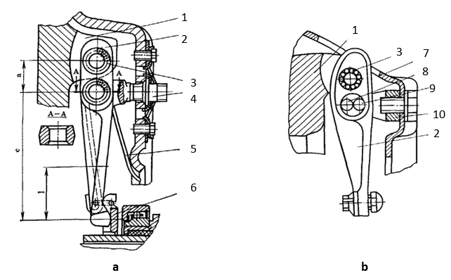
Hình 2.10. Sơ đồ cấu tạo các loại cần tách của ly hợp
1- Đĩa ép; 2- Cần tách; 3- Ổ bi kim; 4- Bu long treo cần tách; 5- Lò xo; 6- Tấm chặn đầu ổ bi bạc mở; 7- Vỏ ly hợp; 8- Chốt tự lựa; 9- Con lăn 10- Quang treo cần tách.
Khi mở ly hợp, ổ bi bạc mở phải tỳ cùng một lúc lên các cần tách, muốn vậy các đầu trong cần tách phải cùng phía nằm trên một mặt phẳng. Điều chỉnh chiều cao đầu trong các cần tách đai ốc (4) lắp cần tách với thân ly hợp, hoặc bằng vít điều chỉnh lắp ở đầu trong của các cần tách. Hình dạng của cần tách phải đảm bảo được khả năng chống uốn theo phương chịu lực Vật liệu chế tạo cần tách thường dùng các loại thép cácbon thấp hoặc trung bình như thép C8, C30 sau đó được xyanua hóa bề mặt làm việc.
Lò xo lá truyền lực
Các lò xo lá liên kết truyền lực với vỏ ly hợp đối với loại một đĩa ma sát và liên kết đĩa ép trung gian với bánh đà ở loại hai đĩa ma sát. Chúng vừa đóng vai trò truyền momen từ vỏ ly hợp và bánh đà đồng thời là cơ cấu chống dính cho ly hợp ở cả loại một đĩa ma sát và hai đĩa ma sát.
Vỏ ly hợp
Vỏ ly hợp được định vị với thân động cơ theo vỏ của bánh đà bằng các chốt định vị và được định vị với vỏ hộp số theo mặt bích của nắp ổ bi trục chủ động hộp số. Hình dạng, kích thước và vị trí các lỗ thông gió của vỏ ly hợp phụ thuộc vào kết cấu của ly hợp. Vỏ ly hợp thường được đúc bằng gang liền một khối hoặc thành hai nửa rồi ghép lại.
b. Nguyên lý làm việc
Ly hợp ma sát trong hệ thống truyền lực của ô tô là loại ly hợp ma sát khô thường đóng, có một hoặc hai đĩa bị động với lực ép được tạo nên bởi lò xo ép bố trí xung quanh hoặc lò xo ép bố trí trung tâm. Hình 2.11 là sơ đồ nguyên lý làm việc của loại ly hợp một đĩa ma sát sử dụng cơ cấu tạo lực ép là lò xo màng. Trên ô tô thường dùng hai loại ly hợp ngắt bằng cách ép Hình 2.11a và ngắt bằng cách kéo Hình 2.11b.
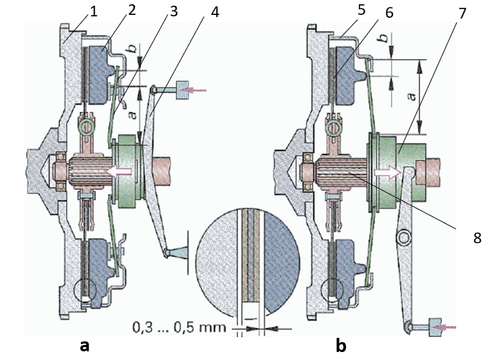
Hình 2.11. Sơ đồ ly hợp ma sát sử dụng cơ cấu ép bằng lò xo màng
a- Ngắt ly hợp bằng cách ép; b- Ngắt ly hợp bằng cách kéo; 1- Bánh đà; 2- Đĩa ép; 3- Lò xo ép; 4- Đòn bẩy; 5- Vỏ ly hợp; 6- Đĩa ma sát; 7- Ổ bi bạc mở; 8- Trục bị động ly hợp.
Ở trạng thái thường đóng:
Lò xo ép sẽ ép chặt đĩa ép, đĩa ma sát và bánh đà liền thành một khối. Kết quà là, lực ma sát được tạo ra giữa đĩa ép, đĩa ma sát và bánh đà. Lực ma sát này sẽ tạo nên momen xoắn truyền qua đĩa ly hợp đến hộp số nhiều cấp. Đĩa ly hợp được kết nối chặt với trục sơ cấp hộp số.
Momen xoắn truyền được phụ thuộc vào:
- Lực ép của lò xo màng,
- Hệ số ma sát cùa cặp bề mặt ma sát,
- Bán kính trung bình cùa đĩa ma sát.
- Số lượng bố ma sát.
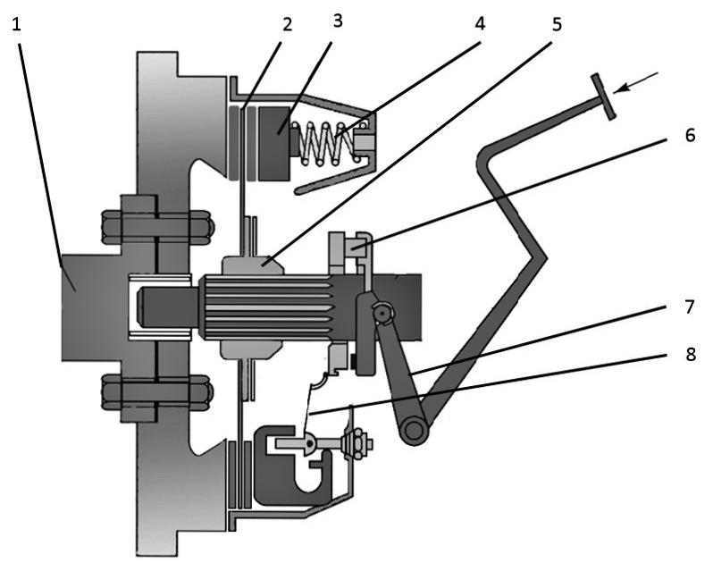
Hình 2.12. Sơ đồ ly hợp ma sát sử dụng cơ cấu ép bằng lò xo trụ
1- Trục khuỷu; 2- Đĩa ma sát; 3- Đĩa ép; 4- Lò xo ép; 5- Moay ơ ly hợp; 6- Ổ bi bạc mở; 7- Đòn bẩy; 8- Cần tách.
Ở trạng thái ngắt:
- Ngắt bằng cách ép Hình 2.11a: Khi đạp bàn đạp ly hợp, đòn bẩy ly hợp ép ổ bi bạc mở ly hợp về phía bánh đà. Do vậy, các lưỡi gà của lò xo màng cũng bị ép ở vành bên trong về phía bánh đà. Nhờ các vòng tựa giữ chặt đầu ngoài với vỏ ly hợp nên lò xo màng tác dụng như đòn bẩy hai đầu. Vành bên ngoài của lò xo di chuyển tách dòng truyền lực từ bánh đà khỏi bề mặt đĩa ma sát. Bằng cách này, lực ép lên đĩa ép mất đi, và các lò xo lá tách đĩa ép khỏi đĩa ma sát. Một khe hở được hình thành giữa các bề mặt ma sát và đĩa ép, và dòng truyền lực bị cắt.
- Ngắt bằng cách ép Hình 2.11b: Đầu trong của lò xo màng ăn khớp vào rãnh tròn trên ổ bi bạc mở ly hợp và khi tác động lên bàn đạp ly hợp thì bị bộ phận này bị kéo về phía hộp số. Loại này đầu trong lò xo màng không được cố định với vỏ ly hợp nên khi tác dụng lên bàn đạp ly hợp lực ép sẽ được ngắt; kết quả là lò xo lá tách đĩa ép khỏi đĩa ma sát. Lò xo màng tạo ra một cơ cấu đòn bẩy một đầu tạo nên tỷ số đòn bẩy ờ lò xo màng (a:b) lớn hơn so với thiết kế kiểu ép Hình 2.11a. Do vậy lực ngắt ly hợp ở loại này nhỏ hơn.
Ở trạng thái trượt:
Tại những thời điểm chuyển từ trạng thái đóng sang trạng thái ngắt ly hợp và ngược lại. Khi đó bề mặt đĩa ma sát phía trong tiếp xúc với bề bánh đà và phía ngoài tiếp xúc với đĩa ép sẽ xuất hiện sự trượt do ma sát. Trạng thái làm việc này cũng chính là chức năng đảm bảo cơ cấu an toàn cho các chi tiết của hệ thống truyền lực khi gặp quá tải.
Đới với ly hợp ma sát sử dụng cơ cấu ép bằng lò xo trụ bố trí xung quanh Hình 2.12Nguyên lý làm việc cũng tương tự như loại trên. Chỉ khác ở trạng thái ngắt, ổ bi bạc mở sẽ tác động vào cần tách thay vì đầu trong của lò xo màng. Cần tách đóng vai trò như một đòn bẩy có đầu ngoài liên kết với đĩa ép.
Khi các bề mặt ma sát mòn, lực ép lúc đầu gia tăng tới trị số cực đại, sau đó giảm liên tục. Khi vượt quá giới hạn mòn, lực ép suy giám đáng kể và ly hợp có thể bị trượt.